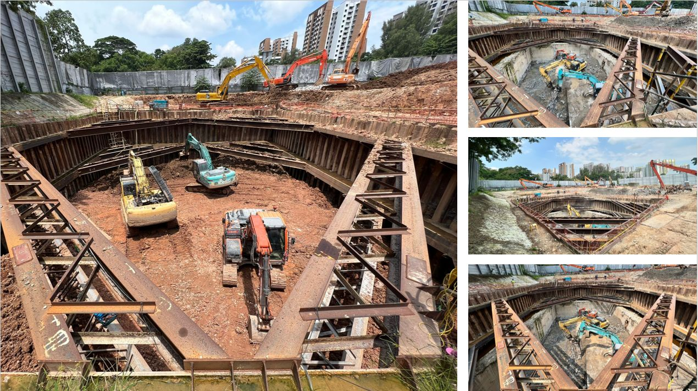

01 / 08

2024 — Ongoing
DTSS Phase 2 — Flow Diversion & Demolition
Used-water pumping installations decommissioning, sheet-piled basement removal, and grouting of disused mains across multiple sites — Public Utilities Board, Contract 1.
- Owner
- Public Utilities Board (PUB)
- Value
- S$9,455,000
- Workhead
- CR03 · Demolition